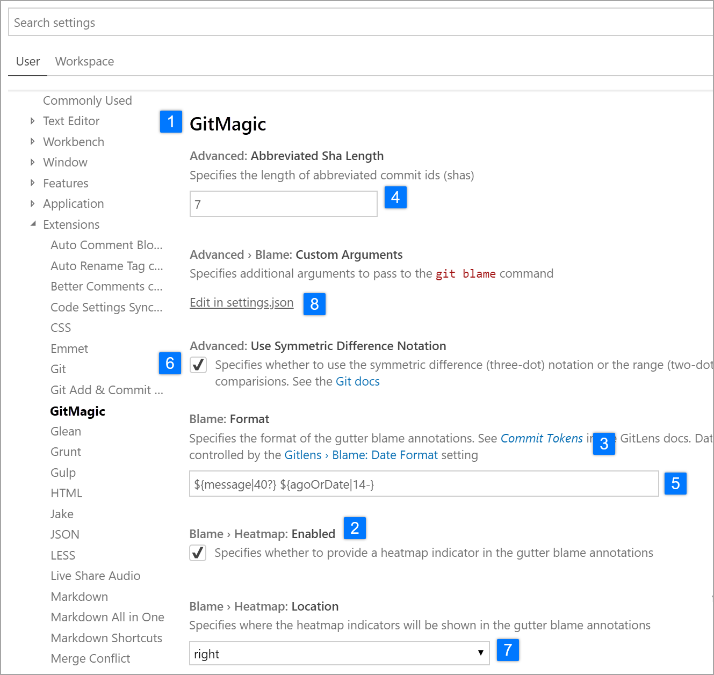
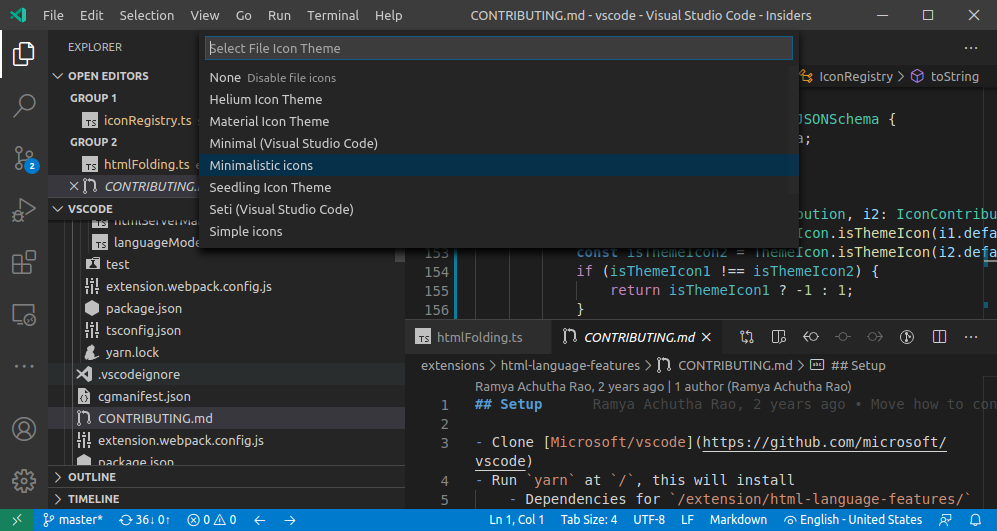

Contribution Points
Contribution Points are a set of JSON declarations that you make in the contributes field of the package.json Extension Manifest. Your extension registers Contribution Points to extend various functionalities within Visual Studio Code. Here is a list of all available Contribution Points:
breakpointscolorscommandsconfigurationconfigurationDefaultscustomEditorsdebuggersgrammarsiconsiconThemesjsonValidationkeybindingslanguagesmenusproblemMatchersproblemPatternsproductIconThemesresourceLabelFormatterssemanticTokenModifierssemanticTokenScopessemanticTokenTypessnippetssubmenustaskDefinitionsterminalthemestypescriptServerPluginsviewsviewsContainersviewsWelcomewalkthroughs
contributes.breakpoints
Usually a debugger extension will also have a contributes.breakpoints entry where the extension lists the language file types for which setting breakpoints will be enabled.
{
"contributes": {
"breakpoints": [
{
"language": "javascript"
},
{
"language": "javascriptreact"
}
]
}
}
contributes.colors
Contributes new themable colors. These colors can be used by the extension in editor decorators and in the status bar. Once defined, users can customize the color in the workspace.colorCustomization setting and user themes can set the color value.
{
"contributes": {
"colors": [
{
"id": "superstatus.error",
"description": "Color for error message in the status bar.",
"defaults": {
"dark": "errorForeground",
"light": "errorForeground",
"highContrast": "#010203",
"highContrastLght": "#feedc3"
}
}
]
}
}
Color default values can be defined for light, dark and high contrast theme and can either be a reference to an existing color or a Color Hex Value.
Extensions can consume new and existing theme colors with the ThemeColor API:
const errorColor = new vscode.ThemeColor('superstatus.error');
contributes.commands
Contribute the UI for a command consisting of a title and (optionally) an icon, category, and enabled state. Enablement is expressed with when clauses. By default, commands show in the Command Palette (⇧⌘P (Windows, Linux Ctrl+Shift+P)) but they can also show in other menus.
Presentation of contributed commands depends on the containing menu. The Command Palette, for
instance, prefixes commands with their category, allowing for easy grouping. However, the
Command Palette doesn't show icons nor disabled commands. The editor context menu, on the other
hand, shows disabled items but doesn't show the category label.
Note: When a command is invoked (from a key binding, from the Command Palette, any other menu, or programmatically), VS Code will emit an activationEvent
onCommand:${command}.
Note: When using icons from product icons, setting
lightanddarkwill disable the icon. The correct syntax is"icon": "$(book)"
command example
{
"contributes": {
"commands": [
{
"command": "extension.sayHello",
"title": "Hello World",
"category": "Hello",
"icon": {
"light": "path/to/light/icon.svg",
"dark": "path/to/dark/icon.svg"
}
}
]
}
}
See the Commands Extension Guide to learn more about using commands in VS Code extensions.

Command icon specifications
Size:Icons should be 16x16 with a 1 pixel padding (image is 14x14) and centered.Color:Icons should use a single color.Format:It is recommended that icons be in SVG, though any image file type is accepted.
contributes.configuration
Contribute configuration keys that will be exposed to the user. The user will be able to set these configuration options as User Settings or as Workspace Settings, either by using the Settings editor or by editing the JSON settings file directly.
This section can either be a single object, representing a single category of settings, or an array of objects, representing multiple categories of settings. If there are multiple categories of settings, the Settings editor will show a submenu in the table of contents for that extension, and the title keys will be used for the submenu entry names.
Configuration example
{
"contributes": {
"configuration": {
"title": "TypeScript",
"properties": {
"typescript.useCodeSnippetsOnMethodSuggest": {
"type": "boolean",
"default": false,
"description": "Complete functions with their parameter signature."
},
"typescript.tsdk": {
"type": ["string", "null"],
"default": null,
"description": "Specifies the folder path containing the tsserver and lib*.d.ts files to use."
}
}
}
}
}
You can read these values from your extension using vscode.workspace.getConfiguration('myExtension').
Configuration schema
Your configuration entry is used both to provide intellisense when editing your settings in the JSON editor, and to define the way they appear in the settings UI.

title
The title 1️⃣️ of a category is the heading used for that category.
{
"configuration": {
"title": "GitMagic"
}
}
Note that if the extension has multiple categories of extensions, and the title of one of the categories is the same as the extension display name, then the settings for that category will be placed directly below the main extension heading, no matter what the order field is set to.
For both the title and displayName fields, words like "Extension", "Configuration", and "Settings" are redundant.
- ✔
"title": "GitMagic" - ❌
"title": "GitMagic Extension" - ❌
"title": "GitMagic Configuration" - ❌
"title": "GitMagic Extension Configuration Settings"
properties
The properties 2️⃣ in your configuration will be a dictionary of configuration properties.
In the settings UI, your configuration key will be used to namespace and construct a title. Though an extension can contain multiple categories of settings, each setting of the extension must still have its own unique key. Capital letters in your key are used to indicate word breaks. For example, if your key is gitMagic.blame.dateFormat, the generated title for the setting will look like this:
Blame: Date Format
Entries will be grouped according to the hierarchy established in your keys. So for example, these entries
gitMagic.blame.dateFormat
gitMagic.blame.format
gitMagic.blame.heatMap.enabled
gitMagic.blame.heatMap.location
will appear in a single group like this:
Blame: Date Format
Blame: Format
Blame › Heatmap: Enabled
Blame › Heatmap: Location
Otherwise, properties without an explicit order field appear in alphabetical order (not the order in which they're listed in the manifest).
Configuration property schema
Configuration keys are defined using a superset of JSON Schema.
description / markdownDescription
Your description 3️⃣ appears after the title and before the input field, except for booleans, where the description is used as the label for the checkbox. 6️⃣
{
"gitMagic.blame.heatmap.enabled": {
"description": "Specifies whether to provide a heatmap indicator in the gutter blame annotations"
}
}
If you use markdownDescription instead of description, your setting description will be rendered as Markdown in the settings UI.
{
"gitMagic.blame.dateFormat": {
"markdownDescription": "Specifies how to format absolute dates (e.g. using the `${date}` token) in gutter blame annotations. See the [Moment.js docs](https://momentjs.com/docs/#/displaying/format/) for valid formats"
}
}
For markdownDescription, in order to add newlines or multiple paragraphs, use the string \n\n to separate the paragraphs instead of just \n.
type
Entries of type number 4️⃣ , string 5️⃣ , boolean 6️⃣ can be edited directly in the settings UI.
{
"gitMagic.views.pageItemLimit": {
"type": "number",
"default": 20,
"markdownDescription": "Specifies the number of items to show in each page when paginating a view list. Use 0 to specify no limit"
}
}
A string setting can be rendered with a multiline text input if it sets "editPresentation": "multilineText" on the configuration entry.
For boolean entries, the description (or markdownDescription) will be used as the label for the checkbox.
{
"gitMagic.blame.compact": {
"type": "boolean",
"description": "Specifies whether to compact (deduplicate) matching adjacent gutter blame annotations"
}
}
Some object and array type settings will be rendered in the settings UI. Simple arrays of number, string, or boolean will be rendered as editable lists. Objects that have properties of type string, number, integer, and/or boolean will be rendered as editable grids of keys and values. Object settings should also have additionalProperties set to either false, or an object with an appropriate type property, to render in the UI.
If an object or array type setting can also contain other types like nested objects, arrays, or null, then the value won't be rendered in the settings UI and can only be modified by editing the JSON directly. Users will see a link to Edit in settings.json as shown in the screenshot above. 8️⃣
order
Both categories and the settings within those categories can take an integer order type property, which gives a reference to how they should be sorted relative to other categories and/or settings.
If two categories have order properties, the category with the lower order number comes first. If a category is not given an order property, it appears after categories that were given that property.
If two settings within the same category have order properties, the setting with the lower order number comes first. If another setting within that same category is not given an order property, it will appear after settings in that category that were given that property.
If two categories have the same order property value, or if two settings within the same category have the same order property value, then they will be sorted in increasing alphabetical order within the settings UI.
enum / enumDescriptions / enumItemLabels
If you provide an array of items under the enum 7️⃣ property, the settings UI will render a dropdown menu.
You can also provide an enumDescriptions property, which provides descriptive text rendered at the bottom of the dropdown:
{
"gitMagic.blame.heatmap.location": {
"type": "string",
"default": "right",
"enum": ["left", "right"],
"enumDescriptions": [
"Adds a heatmap indicator on the left edge of the gutter blame annotations",
"Adds a heatmap indicator on the right edge of the gutter blame annotations"
]
}
}
You can also use markdownEnumDescriptions, and your descriptions will be rendered as Markdown.
To customize the dropdown options, you can use enumItemLabels. The workbench.iconTheme setting uses both enumDescriptions and enumItemLabels. In the screenshot below, the hovered option has the item label "None", with enum description "No file icons" and enum value null.
deprecationMessage / markdownDeprecationMessage
If you set deprecationMessage, or markdownDeprecationMessage, the setting will get a warning underline with your specified message. It won't show up in the settings UI unless it is configured by the user. If you set markdownDeprecationMessage, the markdown will not be rendered in the setting hover or the problems view. If you set both properties, deprecationMessage will be shown in the hover and the problems view, and markdownDeprecationMessage will be rendered as Markdown in the settings UI.
Example:
{
"json.colorDecorators.enable": {
"type": "boolean",
"description": "Enables or disables color decorators",
"markdownDeprecationMessage": "**Deprecated**: Please use `#editor.colorDecorators#` instead.",
"deprecationMessage": "Deprecated: Please use editor.colorDecorators instead."
}
}
Other JSON Schema properties
You can use any of the validation JSON Schema properties to describe other constraints on configuration values:
defaultfor defining the default value of a propertyminimumandmaximumfor restricting numeric valuesmaxLength,minLengthfor restricting string lengthpatternfor restricting strings to a given regular expressionpatternErrorMessagefor giving a tailored error message when a pattern does not match.formatfor restricting strings to well-known formats, such asdate,time,ipv4,email, andurimaxItems,minItemsfor restricting array lengtheditPresentationfor controlling whether a single-line inputbox or multi-line textarea is rendered for the string setting in the Settings editor
Unsupported JSON Schema properties
Not supported in the configuration section are:
$refanddefinition: The configuration schemas needs to be self-contained and cannot make assumptions how the aggregated settings JSON schema document looks like.
For more details on these and other features, see the JSON Schema Reference.
scope
A configuration setting can have one of the following possible scopes:
application- Settings that apply to all instances of VS Code and can only be configured in user settings.machine- Machine specific settings that can be set only in user settings or only in remote settings. For example, an installation path which shouldn't be shared across machines.machine-overridable- Machine specific settings that can be overridden by workspace or folder settings.window- Windows (instance) specific settings which can be configured in user, workspace, or remote settings.resource- Resource settings, which apply to files and folders, and can be configured in all settings levels, even folder settings.language-overridable- Resource settings that can be overridable at a language level.
Configuration scopes determine when a setting is available to the user through the Settings editor and whether the setting is applicable. If no scope is declared, the default is window.
Below are example configuration scopes from the built-in Git extension:
{
"contributes": {
"configuration": {
"title": "Git",
"properties": {
"git.alwaysSignOff": {
"type": "boolean",
"scope": "resource",
"default": false,
"description": "%config.alwaysSignOff%"
},
"git.ignoredRepositories": {
"type": "array",
"default": [],
"scope": "window",
"description": "%config.ignoredRepositories%"
},
"git.autofetch": {
"type": ["boolean", "string"],
"enum": [true, false, "all"],
"scope": "resource",
"markdownDescription": "%config.autofetch%",
"default": false,
"tags": ["usesOnlineServices"]
}
}
}
}
}
You can see that git.alwaysSignOff has resource scope and can be set per user, workspace, or folder, while the ignored repositories list with window scope applies more globally for the VS Code window or workspace (which might be multi-root).
Linking to settings
You can insert a link to another setting, which will be rendered as a clickable link in the settings UI, by using this special syntax in the markdown-type properties: `#target.setting.id#`. This will work in markdownDescription, markdownEnumDescriptions, and markdownDeprecationMessage. Example:
"files.autoSaveDelay": {
"markdownDescription": "Controls the delay in ms after which a dirty editor is saved automatically. Only applies when `#files.autoSave#` is set to `afterDelay`.",
// ...
}
In the settings UI, this is rendered as:

contributes.configurationDefaults
Contribute default values for other registered configurations and override their defaults.
The following example overrides the default behavior of files.autoSave setting to AutoSave files on focus change.
"configurationDefaults": {
"files.autoSave": "onFocusChange"
}
You can also contribute default editor configurations for the provided language. For example, the following snippet contributes default editor configurations for the markdown language:
{
"contributes": {
"configurationDefaults": {
"[markdown]": {
"editor.wordWrap": "on",
"editor.quickSuggestions": false
}
}
}
}
contributes.customEditors
The customEditors contribution point is how your extension tells VS Code about the custom editors that it provides. For example, VS Code needs to know what types of files your custom editor works with as well as how to identify your custom editor in any UI.
Here's a basic customEditor contribution for the custom editor extension sample:
"contributes": {
"customEditors": [
{
"viewType": "catEdit.catScratch",
"displayName": "Cat Scratch",
"selector": [
{
"filenamePattern": "*.cscratch"
}
],
"priority": "default"
}
]
}
customEditors is an array, so your extension can contribute multiple custom editors.
-
viewType- Unique identifier for your custom editor.This is how VS Code ties a custom editor contribution in the
package.jsonto your custom editor implementation in code. This must be unique across all extensions, so instead of a genericviewTypesuch as"preview"make sure to use one that is unique to your extension, for example"viewType": "myAmazingExtension.svgPreview". -
displayName- Name that identifies the custom editor in VS Code's UI.The display name is shown to the user in VS Code UI such as the View: Reopen with dropdown.
-
selector- Specifies which files a custom editor is active for.The
selectoris an array of one or more glob patterns. These glob patterns are matched against file names to determine if the custom editor can be used for them. AfilenamePatternsuch as*.pngwill enable the custom editor for all PNG files.You can also create more specific patterns that match on file or directory names, for example
**/translations/*.json. -
priority- (optional) Specifies when the custom editor is used.prioritycontrols when a custom editor is used when a resource is open. Possible values are:"default"- Try to use the custom editor for every file that matches the custom editor'sselector. If there are multiple custom editors for a given file, the user will have to select which custom editor they want to use."option"- Do not use the custom editor by default but allow users to switch to it or configure it as their default.
You can learn more in the Custom Editors extension guide.
contributes.debuggers
Contribute a debugger to VS Code. A debugger contribution has the following properties:
typeis a unique ID that is used to identify this debugger in a launch configuration.labelis the user visible name of this debugger in the UI.programthe path to the debug adapter that implements the VS Code debug protocol against the real debugger or runtime.runtimeif the path to the debug adapter is not an executable but needs a runtime.configurationAttributesis the schema for launch configuration arguments specific to this debugger. Please note that the JSON schema constructs$refanddefinitionare not supported.initialConfigurationslists launch configurations that are used to populate an initial launch.json.configurationSnippetslists launch configurations that are available through IntelliSense when editing a launch.json.variablesintroduces substitution variables and binds them to commands implemented by the debugger extension.languagesthose languages for which the debug extension could be considered the "default debugger".
debugger example
{
"contributes": {
"debuggers": [
{
"type": "node",
"label": "Node Debug",
"program": "./out/node/nodeDebug.js",
"runtime": "node",
"languages": ["javascript", "typescript", "javascriptreact", "typescriptreact"],
"configurationAttributes": {
"launch": {
"required": ["program"],
"properties": {
"program": {
"type": "string",
"description": "The program to debug."
}
}
}
},
"initialConfigurations": [
{
"type": "node",
"request": "launch",
"name": "Launch Program",
"program": "${workspaceFolder}/app.js"
}
],
"configurationSnippets": [
{
"label": "Node.js: Attach Configuration",
"description": "A new configuration for attaching to a running node program.",
"body": {
"type": "node",
"request": "attach",
"name": "${2:Attach to Port}",
"port": 9229
}
}
],
"variables": {
"PickProcess": "extension.node-debug.pickNodeProcess"
}
}
]
}
}
For a full walkthrough on how to integrate a debugger, go to Debugger Extension.
contributes.grammars
Contribute a TextMate grammar to a language. You must provide the language this grammar applies to, the TextMate scopeName for the grammar and the file path.
Note: The file containing the grammar can be in JSON (filenames ending in .json) or in XML plist format (all other files).
grammar example
{
"contributes": {
"grammars": [
{
"language": "markdown",
"scopeName": "text.html.markdown",
"path": "./syntaxes/markdown.tmLanguage.json",
"embeddedLanguages": {
"meta.embedded.block.frontmatter": "yaml"
}
}
]
}
}
See the Syntax Highlight Guide to learn more about how to register TextMate grammars associated with a language to receive syntax highlighting.
contributes.icons
Contribute a new icon by ID, along with a default icon. The icon ID can then be used by the extension (or any other extensions that depend on the extension) anywhere a ThemeIcon can be used new ThemeIcon("iconId"), in Markdown strings ($(iconId)), and as icons in certain contribution points.
{
"contributes": {
"icons": {
"distro-ubuntu": {
"description": "Ubuntu icon",
"default": {
"fontPath": "./distroicons.woff",
"fontCharacter": "\\E001"
}
},
"distro-fedora": {
"description": "Ubuntu icon",
"default": {
"fontPath": "./distroicons.woff",
"fontCharacter": "\\E002"
}
}
}
}
}
contributes.iconThemes
Contribute a file icon theme to VS Code. File icons are shown next to file names, indicating the file type.
You must specify an id (used in the settings), a label and the path to the file icon definition file.
file icon theme example
{
"contributes": {
"iconThemes": [
{
"id": "my-cool-file-icons",
"label": "Cool File Icons",
"path": "./fileicons/cool-file-icon-theme.json"
}
]
}
}

See the File Icon Theme Guide on how to create a File Icon Theme.
contributes.jsonValidation
Contribute a validation schema for a specific type of json file. The url value can be either a local path to a schema file included in the extension or a remote server URL such as a json schema store.
{
"contributes": {
"jsonValidation": [
{
"fileMatch": ".jshintrc",
"url": "https://json.schemastore.org/jshintrc"
}
]
}
}
contributes.keybindings
Contribute a key binding rule defining what command should be invoked when the user presses a key combination. See the Key Bindings topic where key bindings are explained in detail.
Contributing a key binding will cause the Default Keyboard Shortcuts to display your rule, and every UI representation of the command will now show the key binding you have added. And, of course, when the user presses the key combination the command will be invoked.
Note: Because VS Code runs on Windows, macOS and Linux, where modifiers differ, you can use "key" to set the default key combination and overwrite it with a specific platform.
Note: When a command is invoked (from a key binding or from the Command Palette), VS Code will emit an activationEvent
onCommand:${command}.
keybinding example
Defining that Ctrl+F1 under Windows and Linux and Cmd+F1 under macOS trigger the "extension.sayHello" command:
{
"contributes": {
"keybindings": [
{
"command": "extension.sayHello",
"key": "ctrl+f1",
"mac": "cmd+f1",
"when": "editorTextFocus"
}
]
}
}
contributes.languages
Contribute definition of a programming language. This will introduce a new language or enrich the knowledge VS Code has about a language.
The main effects of contributes.languages are:
- Define a
languageIdthat can be reused in other parts of VS Code API, such asvscode.TextDocument.getLanguageId()and theonLanguageActivation Events.- You can contribute a human-readable using the
aliasesfield. The first item in the list will be used as the human-readable label.
- You can contribute a human-readable using the
- Associate file name extensions (
extensions), file names (filenames), file name glob patterns (filenamePatterns), files that begin with a specific line (such as hashbang) (firstLine), andmimetypesto thatlanguageId. - Contribute a set of Declarative Language Features for the contributed language. Learn more about the configurable editing features in the Language Configuration Guide.
- Contribute an icon which can be used as in file icon themes if theme does not contain an icon for the language
language example
{
"contributes": {
"languages": [
{
"id": "python",
"extensions": [".py"],
"aliases": ["Python", "py"],
"filenames": [],
"firstLine": "^#!/.*\\bpython[0-9.-]*\\b",
"configuration": "./language-configuration.json",
"icon": {
"light": "./icons/python-light.png",
"dark": "./icons/python-dark.png"
}
}
]
}
}
contributes.menus
Contribute a menu item for a command to the editor or Explorer. The menu item definition contains the command that should be invoked when selected and the condition under which the item should show. The latter is defined with the when clause, which uses the key bindings when clause contexts.
A command property indicates which command to run when selecting a menu item. A submenu property indicates which submenu to render in this location.
When declaring a command menu item, an alternative command can also be defined using the alt-property. It will be shown and invoked when pressing Alt while opening a menu. On Windows and Linux Shift also does this, which is useful in situations where Alt would trigger the window menu bar.
Last, a group property defines sorting and grouping of menu items. The navigation group is special as it will always be sorted to the top/beginning of a menu.
Note that
whenclauses apply to menus andenablementclauses to commands. Theenablementapplies to all menus and even keybindings while thewhenonly applies to a single menu.
Currently extension writers can contribute to:
- The global Command Palette -
commandPalette - The New File item in the File menu and Get Started page -
file/newFile - The Explorer context menu -
explorer/context - The editor context menu -
editor/context - The editor title menu bar -
editor/title - The editor title context menu -
editor/title/context - The debug callstack view context menu -
debug/callstack/context - The debug callstack view inline actions -
debug/callstack/contextgroupinline - The debug variables view context menu -
debug/variables/context - The debug toolbar -
debug/toolBar - The SCM title menu -
scm/title - SCM resource groups menus -
scm/resourceGroup/context - SCM resource folders menus -
scm/resourceFolder/context - SCM resources menus -
scm/resourceState/context - SCM change title menus -
scm/change/title - The SCM source control menu -
scm/sourceControl - The View title menu -
view/title - The View item menu -
view/item/context - The macOS Touch Bar -
touchBar - The comment thread title menu bar -
comments/commentThread/title - The comment thread context menu -
comments/commentThread/context - The comment title menu bar -
comments/comment/title - The comment context menu -
comments/comment/context - The Timeline view title menu bar -
timeline/title - The Timeline view item context menu -
timeline/item/context - The Extensions view context menu -
extension/context - The Test Explorer item context menu -
testing/item/context - The menu for a gutter decoration for a test item -
testing/item/gutter - The notebook toolbar -
notebook/toolbar - The notebook cell title menu bar -
notebook/cell/title - The notebook cell execution menu -
notebook/cell/execute - The interactive toolbar -
interactive/toolbar - The interactive cell title menu bar -
interactive/cell/title - Any contributed submenu
Note: When a command is invoked from a (context) menu, VS Code tries to infer the currently selected resource and passes that as a parameter when invoking the command. For instance, a menu item inside the Explorer is passed the URI of the selected resource and a menu item inside an editor is passed the URI of the document.
In addition to a title, commands can also define icons which VS Code will show in the editor title menu bar.
menu example
Here's a command menu item:
{
"contributes": {
"menus": {
"editor/title": [
{
"when": "resourceLangId == markdown",
"command": "markdown.showPreview",
"alt": "markdown.showPreviewToSide",
"group": "navigation"
}
]
}
}
}

Here's a submenu menu item:
{
"contributes": {
"menus": {
"scm/title": [
{
"submenu": "git.commit",
"group": "2_main@1",
"when": "scmProvider == git"
}
]
}
}
}

Context specific visibility of Command Palette menu items
When registering commands in package.json, they will automatically be shown in the Command Palette (⇧⌘P (Windows, Linux Ctrl+Shift+P)). To allow more control over command visibility, there is the commandPalette menu item. It allows you to define a when condition to control if a command should be visible in the Command Palette or not.
The snippet below makes the 'Hello World' command only visible in the Command Palette when something is selected in the editor:
{
"commands": [
{
"command": "extension.sayHello",
"title": "Hello World"
}
],
"menus": {
"commandPalette": [
{
"command": "extension.sayHello",
"when": "editorHasSelection"
}
]
}
}
Sorting of groups
Menu items can be sorted into groups. They are sorted in lexicographical order with the following defaults/rules. You can add menu items to these groups or add new groups of menu items in between, below, or above.
The editor context menu has these default groups:
navigation- Thenavigationgroup comes first in all cases.1_modification- This group comes next and contains commands that modify your code.9_cutcopypaste- The second last default group with the basic editing commands.z_commands- The last default group with an entry to open the Command Palette.

The explorer context menu has these default groups:
navigation- Commands related to navigation across VS Code. This group comes first in all cases.2_workspace- Commands related to workspace manipulation.3_compare- Commands related to comparing files in the diff editor.4_search- Commands related to searching in the search view.5_cutcopypaste- Commands related to cutting, copying, and pasting of files.6_copypath- Commands related to copying file paths.7_modification- Commands related to the modification of file.
The editor tab context menu has these default groups:
1_close- Commands related to closing editors.3_preview- Commands related to pinning editors.
The editor title menu has these default groups:
navigation- Commands related to navigating.1_run- Commands related to running and debugging the editor.1_diff- Commands related to working with diff editors.3_open- Commands related to opening editors.5_close- Commands related to closing editors.
navigation and 1_run are shown in the primary editor title area. The other groups are shown in the secondary area - under the ... menu.
The Timeline view item context menu has these default groups:
inline- Important or frequently used timeline item commands. Rendered as a toolbar.1_actions- Commands related to working with timeline items.5_copy- Commands related to copying timeline item information.
The Extensions view context menu has these default groups:
1_copy- Commands related to copying extension information.2_configure- Commands related to configuring an extension.
Sorting inside groups
The order inside a group depends on the title or an order-attribute. The group-local order of a menu item is specified by appending @<number> to the group identifier as shown below:
{
"editor/title": [
{
"when": "editorHasSelection",
"command": "extension.Command",
"group": "myGroup@1"
}
]
}
contributes.problemMatchers
Contribute problem matcher patterns. These contributions work in both the output panel runner and in the terminal runner. Below is an example to contribute a problem matcher for the gcc compiler in an extension:
{
"contributes": {
"problemMatchers": [
{
"name": "gcc",
"owner": "cpp",
"fileLocation": ["relative", "${workspaceFolder}"],
"pattern": {
"regexp": "^(.*):(\\d+):(\\d+):\\s+(warning|error):\\s+(.*)$",
"file": 1,
"line": 2,
"column": 3,
"severity": 4,
"message": 5
}
}
]
}
}
This problem matcher can now be used in a tasks.json file via a name reference $gcc. An example looks like this:
{
"version": "2.0.0",
"tasks": [
{
"label": "build",
"command": "gcc",
"args": ["-Wall", "helloWorld.c", "-o", "helloWorld"],
"problemMatcher": "$gcc"
}
]
}
Also see: Defining a Problem Matcher
contributes.problemPatterns
Contributes named problem patterns that can be used in problem matchers (see above).
contributes.productIconThemes
Contribute a product icon theme to VS Code. Product icons are all icons used in VS Code except file icons and icons contributed from extensions.
You must specify an id (used in the settings), a label and the path to the icon definition file.
product icon theme example
{
"contributes": {
"productIconThemes": [
{
"id": "elegant",
"label": "Elegant Icon Theme",
"path": "./producticons/elegant-product-icon-theme.json"
}
]
}
}
See the Product Icon Theme Guide on how to create a Product Icon Theme.
contributes.resourceLabelFormatters
Contributes resource label formatters that specify how to display URIs everywhere in the workbench. For example here's how an extension could contribute a formatter for URIs with scheme remotehub:
{
"contributes": {
"resourceLabelFormatters": [
{
"scheme": "remotehub",
"formatting": {
"label": "${path}",
"separator": "/",
"workspaceSuffix": "GitHub"
}
}
]
}
}
This means that all URIs that have a scheme remotehub will get rendered by showing only the path segment of the URI and the separator will be /. Workspaces which have the remotehub URI will have the GitHub suffix in their label.
contributes.semanticTokenModifiers
Contributes new semantic token modifiers that can be highlighted via theme rules.
{
"contributes": {
"semanticTokenModifiers": [
{
"id": "native",
"description": "Annotates a symbol that is implemented natively"
}
]
}
}
See the Semantic Highlighting Guide to read more about semantic highlighting.
contributes.semanticTokenScopes
Contributes mapping between semantic token types & modifiers and scopes either as a fallback or to support language-specific themes.
{
"contributes": {
"semanticTokenScopes": [
{
"language": "typescript",
"scopes": {
"property.readonly": ["variable.other.constant.property.ts"]
}
}
]
}
}
See the Semantic Highlighting Guide to read more about semantic highlighting.
contributes.semanticTokenTypes
Contributes new semantic token types that can be highlighted via theme rules.
{
"contributes": {
"semanticTokenTypes": [
{
"id": "templateType",
"superType": "type",
"description": "A template type."
}
]
}
}
See the Semantic Highlighting Guide to read more about semantic highlighting.
contributes.snippets
Contribute snippets for a specific language. The language attribute is the language identifier and the path is the relative path to the snippet file, which defines snippets in the VS Code snippet format.
The example below shows adding snippets for the Go language.
{
"contributes": {
"snippets": [
{
"language": "go",
"path": "./snippets/go.json"
}
]
}
}
contributes.submenus
Contribute a submenu as a placeholder onto which menu items can be contributed. A submenu requires a label to be shown in the parent menu.
In addition to a title, commands can also define icons that VS Code will show in the editor title menu bar.
submenu example
{
"contributes": {
"submenus": [
{
"id": "git.commit",
"label": "Commit"
}
]
}
}
contributes.taskDefinitions
Contributes and defines an object literal structure that allows to uniquely identify a contributed task in the system. A task definition has at minimum a type property but it usually defines additional properties. For example a task definition for a task representing a script in a package.json file looks like this:
{
"taskDefinitions": [
{
"type": "npm",
"required": ["script"],
"properties": {
"script": {
"type": "string",
"description": "The script to execute"
},
"path": {
"type": "string",
"description": "The path to the package.json file. If omitted the package.json in the root of the workspace folder is used."
}
}
}
]
}
The task definition is defined using JSON schema syntax for the required and properties property. The type property defines the task type. If the above example:
"type": "npm"associates the task definition with the npm tasks"required": [ "script" ]defines thatscriptattributes as mandatory. Thepathproperty is optional."properties" : { ... }defines the additional properties and their types.
When the extension actually creates a Task, it needs to pass a TaskDefinition that conforms to the task definition contributed in the package.json file. For the npm example a task creation for the test script inside a package.json file looks like this:
let task = new vscode.Task({ type: 'npm', script: 'test' }, ....);
contributes.terminal
Contribute a terminal profile to VS Code, allowing extensions to handle the creation of the profiles. When defined, the profile should appear when creating the terminal profile
{
"activationEvents": ["onTerminalProfile:my-ext.terminal-profile"],
"contributes": {
"terminal": {
"profiles": [
{
"title": "Profile from extension",
"id": "my-ext.terminal-profile"
}
]
}
}
}
When defined, the profile will show up in the terminal profile selector. When activated, handle the creation of the profile by returning terminal options:
vscode.window.registerTerminalProfileProvider('my-ext.terminal-profile', {
provideProfileOptions(
token: vscode.CancellationToken
): vscode.ProviderResult<vscode.TerminalOptions | vscode.ExtensionTerminalOptions> {
return { name: 'Profile from extension', shellPath: 'bash' };
}
});
contributes.themes
Contribute a color theme to VS Code, defining workbench colors and styles for syntax tokens in the editor.
You must specify a label, whether the theme is a dark theme or a light theme (such that the rest of VS Code changes to match your theme) and the path to the file (JSON format).
theme example
{
"contributes": {
"themes": [
{
"label": "Monokai",
"uiTheme": "vs-dark",
"path": "./themes/monokai-color-theme.json"
}
]
}
}

See the Color Theme Guide on how to create a Color Theme.
contributes.typescriptServerPlugins
Contributes TypeScript server plugins that augment VS Code's JavaScript and TypeScript support:
{
"contributes": {
"typescriptServerPlugins": [
{
"name": "typescript-styled-plugin"
}
]
}
}
The above example extension contributes the typescript-styled-plugin which adds styled-component IntelliSense for JavaScript and TypeScript. This plugin will be loaded from the extension and must be installed as a normal NPM dependency in the extension:
{
"dependencies": {
"typescript-styled-plugin": "*"
}
}
TypeScript server plugins are loaded for all JavaScript and TypeScript files when the user is using VS Code's version of TypeScript. They are not activated if the user is using a workspace version of TypeScript, unless the plugin explicitly sets "enableForWorkspaceTypeScriptVersions": true.
{
"contributes": {
"typescriptServerPlugins": [
{
"name": "typescript-styled-plugin",
"enableForWorkspaceTypeScriptVersions": true
}
]
}
}
Plugin configuration
Extensions can send configuration data to contributed TypeScript plugins through an API provided by VS Code's built-in TypeScript extension:
// In your VS Code extension
export async function activate(context: vscode.ExtensionContext) {
// Get the TS extension
const tsExtension = vscode.extensions.getExtension('vscode.typescript-language-features');
if (!tsExtension) {
return;
}
await tsExtension.activate();
// Get the API from the TS extension
if (!tsExtension.exports || !tsExtension.exports.getAPI) {
return;
}
const api = tsExtension.exports.getAPI(0);
if (!api) {
return;
}
// Configure the 'my-typescript-plugin-id' plugin
api.configurePlugin('my-typescript-plugin-id', {
someValue: process.env['SOME_VALUE']
});
}
The TypeScript server plugin receives the configuration data through an onConfigurationChanged method:
// In your TypeScript plugin
import * as ts_module from 'typescript/lib/tsserverlibrary';
export = function init({ typescript }: { typescript: typeof ts_module }) {
return {
create(info: ts.server.PluginCreateInfo) {
// Create new language service
},
onConfigurationChanged(config: any) {
// Receive configuration changes sent from VS Code
}
};
};
This API allows VS Code extensions to synchronize VS Code settings with a TypeScript server plugin, or dynamically change the behavior of a plugin. Take a look at the TypeScript TSLint plugin and lit-html extensions to see how this API is used in practice.
contributes.views
Contribute a view to VS Code. You must specify an identifier and name for the view. You can contribute to following view containers:
explorer: Explorer view container in the Activity Barscm: Source Control Management (SCM) view container in the Activity Bardebug: Run and Debug view container in the Activity Bartest: Test view container in the Activity Bar- Custom view containers contributed by Extensions.
When the user opens the view, VS Code will then emit an activationEvent onView:${viewId} (onView:nodeDependencies for the example below). You can also control the visibility of the view by providing the when context value. The icon specified will be used when the title cannot be shown (e.g. when the view is dragged to the Activity Bar). The contextualTitle is used when the view is moved out of its default view container and needs additional context.
{
"contributes": {
"views": {
"explorer": [
{
"id": "nodeDependencies",
"name": "Node Dependencies",
"when": "workspaceHasPackageJSON",
"icon": "media/dep.svg",
"contextualTitle": "Package Explorer"
}
]
}
}
}

The content of a view can be populated in two ways:
- With a TreeView by providing a data provider through
createTreeViewAPI or register the data provider directly throughregisterTreeDataProviderAPI to populate data. TreeViews are ideal for showing hierarchical data and lists. Refer to the tree-view-sample. - With a WebviewView by registering a provider with
registerWebviewViewProvider. Webview views allow rendering arbitrary HTML in the view. See the webview view sample extension for more details.
contributes.viewsContainers
Contribute a view container into which Custom views can be contributed. You must specify an identifier, title, and an icon for the view container. At present, you can contribute them to the Activity Bar (activitybar) and Panel (panel). Below example shows how the Package Explorer view container is contributed to the Activity Bar and how views are contributed to it.
{
"contributes": {
"viewsContainers": {
"activitybar": [
{
"id": "package-explorer",
"title": "Package Explorer",
"icon": "resources/package-explorer.svg"
}
]
},
"views": {
"package-explorer": [
{
"id": "package-dependencies",
"name": "Dependencies"
},
{
"id": "package-outline",
"name": "Outline"
}
]
}
}
}
Icon specifications
-
Size:Icons should be 24x24 and centered. -
Color:Icons should use a single color. -
Format:It is recommended that icons be in SVG, though any image file type is accepted. -
States:All icons inherit the following state styles:State Opacity Default 60% Hover 100% Active 100%
contributes.viewsWelcome
Contribute welcome content to Custom views. Welcome content only applies to empty tree views. A view is considered empty if the tree has no children and no TreeView.message. By convention, any command links that are on a line by themselves are displayed as a button. You can specify the view that the welcome content should apply to with the view property. Visibility of the welcome content can be controlled with the when context value. The text to be displayed as the welcome content is set with the contents property.
{
"contributes": {
"viewsWelcome": [
{
"view": "scm",
"contents": "In order to use git features, you can open a folder containing a git repository or clone from a URL.\n[Open Folder](command:vscode.openFolder)\n[Clone Repository](command:git.clone)\nTo learn more about how to use git and source control in VS Code [read our docs](https://aka.ms/vscode-scm).",
"when": "config.git.enabled && git.state == initialized && workbenchState == empty"
}
]
}
}

Multiple welcome content items can be contributed to one view. When this happens, the content that come from VS Code core comes first, followed by content from built-in extensions, followed by content from all other extensions.
contributes.walkthroughs
Contribute walkthroughs to appear on the Getting Started page. Walkthroughs are automatically opened on install of your extension and provide a convenient way to introduce users to features of your extension.
Walkthroughs consist of a title, description, id, and a series of steps. Additionally, a when condition can be set to hide or show the walkthrough based on context keys. For example, a walkthrough to explain setup on a Linux platform could be given when: "isLinux" to only appear on Linux machines.
Each step in a walkthrough has a title, description, id, and media element (either an image or Markdown content), along with an optional set of events that will cause the step to be checked (shown in the example below). Step descriptions are Markdown content, and support **bold**, __underlined__, and ``code`` rendering, as well as links. Similar to walkthroughs, steps can be given when conditions to hide or show them based on context keys.
{
"contributes": {
"walkthroughs": [
{
"id": "sample",
"title": "Sample",
"description": "A sample walkthrough",
"steps": [
{
"id": "runcommand",
"title": "Run Command",
"description": "This step will run a command and check off once it has been run.\n[Run Command](command:getting-started-sample.runCommand)",
"media": { "image": "media/image.png", "altText": "Empty image" },
"completionEvents": ["onCommand:getting-started-sample.runCommand"]
},
{
"id": "changesetting",
"title": "Change Setting",
"description": "This step will change a setting and check off when the setting has changed\n[Change Setting](command:getting-started-sample.changeSetting)",
"media": { "markdown": "media/markdown.md" },
"completionEvents": ["onSettingChanged:getting-started-sample.sampleSetting"]
}
]
}
]
}
}
Completion events
By default, if no completionEvents events are provided, the step will be checked off when any of it's buttons are clicked, or if the step has no buttons, when it is opened. If finer control is required, a list of completionEvents can be provided.
Available completion events include:
onCommand:myCommand.id: Check off step when a command has been run.onSettingChanged:mySetting.id: Check off step once the given setting has been modified.onContext:contextKeyExpression: Check off step when a context key expression evaluates true.extensionInstalled:myExt.id: Check off step if the given extension is installed.onView:myView.id: Check off step once a given view becomes visible.onLink:https://...: Check off step once a given link has been opened via a Walkthrough.
Once a step has been checked off, it will remain checked off until the user explicitly unchecks the step or resets their progress (via the Getting Started: Reset Progress command).